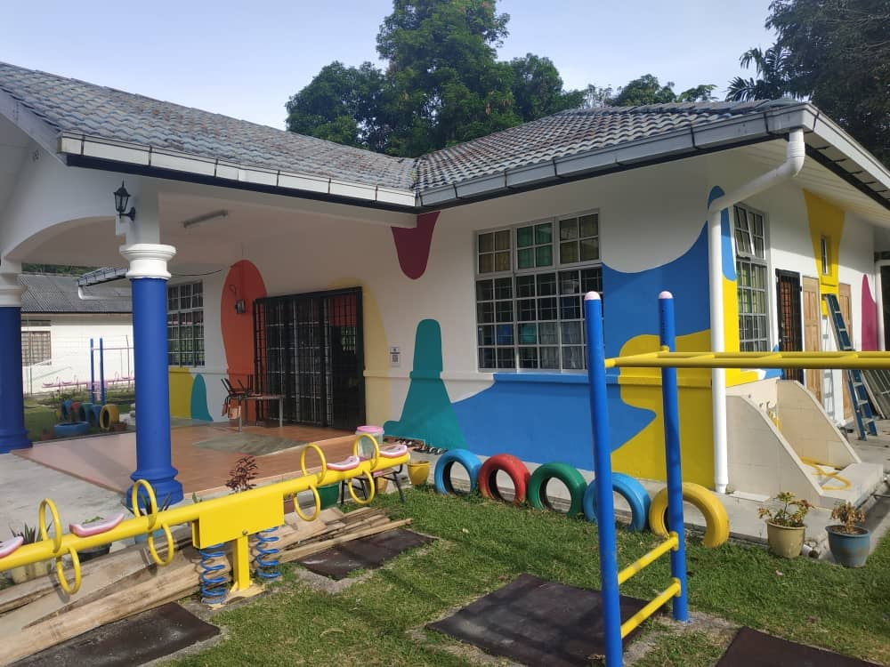
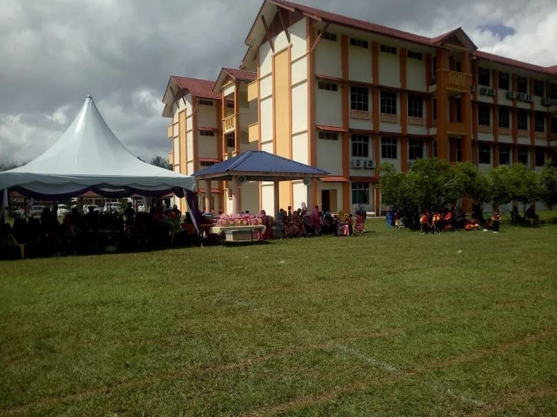
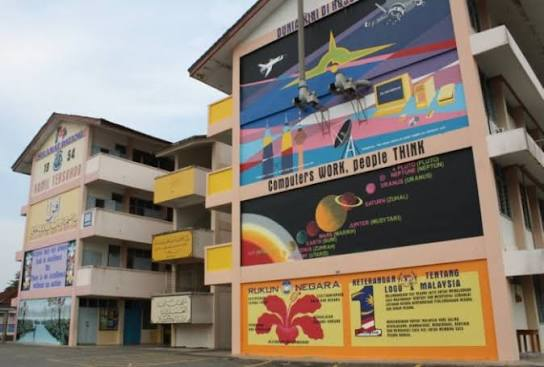
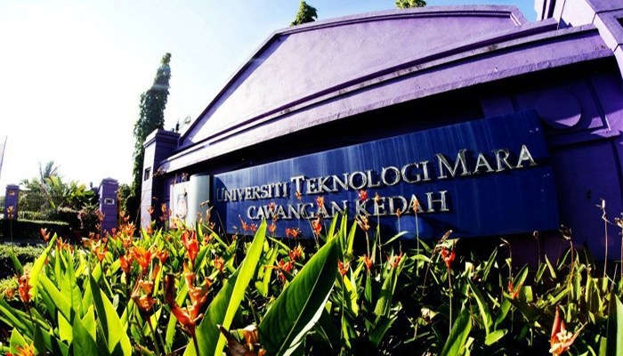

Every obstacle is bulding strength you will need at the top.

My first learning experience was when I was around 6 years old. I studied at a local kindergarten called Tadika Kemas where I learned basics like reading and counting.

I continue my education in primary school, it was during this time that I discovering my interests, becoming school prefect, joining activities, and make friends.

I was lucky to get into my dream school, which made the experience even more meaningful for me. During this time, I studied more advanced subjects and slowly learned how to manage my time, responsibilities, and studies better. High school was also filled with memorable moments, friendships, and challenges.

Currently, I am continuing my studies at UiTM Kedah Diploma in Library Informatics. This new chapter of my education journey feels more challenging because I did not manage to get the course I originally wanted. However, I am still trying my best to adapt. University life has also taught me how to be more independent and manage my time better.
| Level | Year | Description |
|---|---|---|
| Kindergarten | 2012 | Basic learning and social skills |
| Primary School | 2013 - 2018 | Academic foundation and activities |
| High School | 2019 - 2023 | Secondary education and self-development |
| University | 2024 - Present | Diploma and future career preparation |
Click below to listen to the UiTM song:
Listen Here 🎶